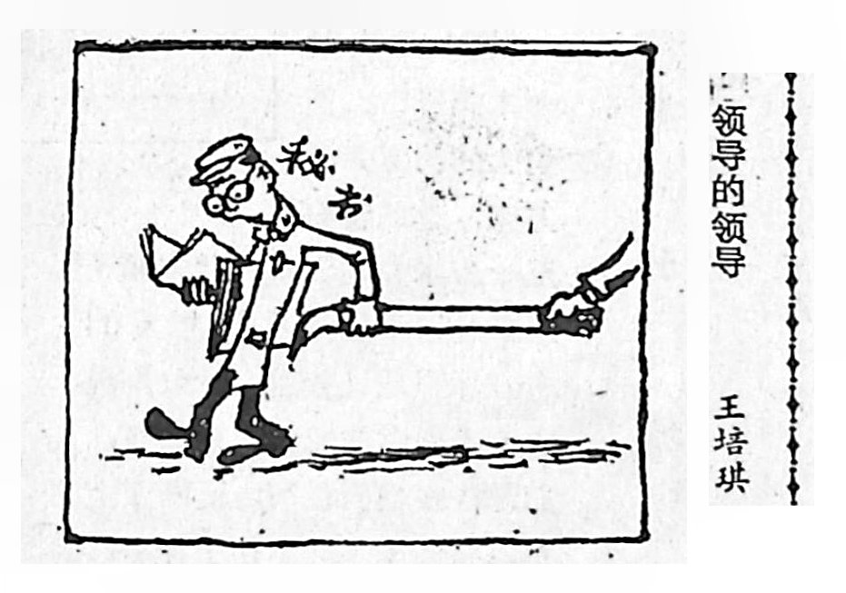

王培琪 《人事》1987年第5期（总第20期），第43页
领导的领导
The Leader's Leader
- Text in the drawing
- 秘书
Secretary - Description
- A secretary, papers in one hand and a briefcase under his arm, strides along with one arm stretched absurdly far ahead of him, pen in hand.
- Note
- Leaders' secretaries drafted their speeches and documents and controlled access to them; the title suggests the secretary is really the one in charge.
- Artist
- Wang Peiqi 王培琪
- Published in
- 《人事》1987年第5期（总第20期）, p. 43
- Themes
- Bureaucratism · Paperwork and documents

Cite
Wang Peiqi, “领导的领导” [The Leader's Leader], Renshi (Personnel) 《人事》, 1987, no. 5, p. 43.